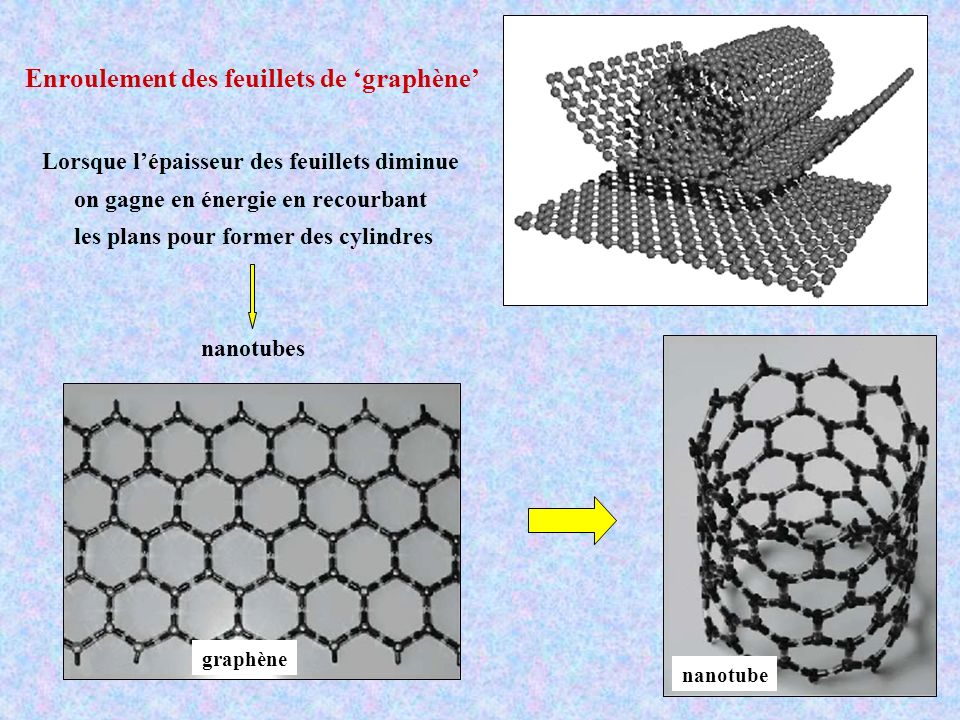
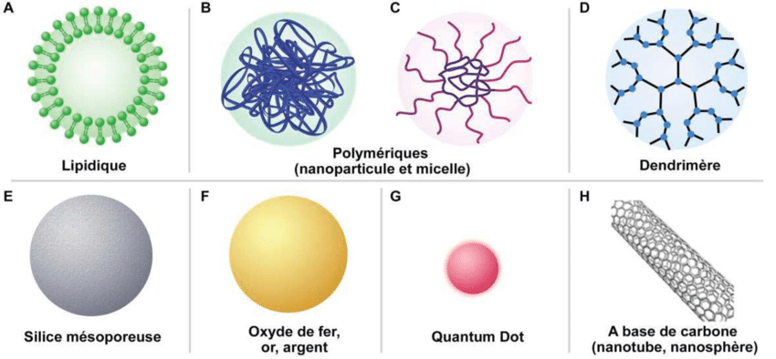

la nanotechnologie est classifier par des differents types :
Nanotube
Le nanotube est une structure cristalline particulière, de forme tubulaire, creuse et close, composée d'atomes disposés régulièrement en pentagones, hexagones et/ou heptagones, obtenue à partir de certains matériaux, en particulier le carbone et le nitrure de bore.
Les nanotubes de carbone sont une forme de structure cristalline du carbone proche des fullerènes. Ils sont un des premiers produits industriels du domaine des nanotechnologies.
Image d'un bout de nanotube réalise par un microscope électronique
Image d'un bout de nanotube réalise par un microscope électronique
Les fullerènes ont été découverts en 1985 par Harold Kroto, Robert Curl et Richard Smalley (ils ont obtenu collectivement le prix Nobel de chimie en 1996 pour leurs travaux sur les fullerènes).
En 1990, Wolfgang Kraetschmer et Don Huffman découvrent un procédé permettant de synthétiser des quantités importantes de fullerènes, permettant à la recherche de travailler sur des échantillons plus significatifs.
Les nanotubes eux-mêmes ont été découverts en 1991 par Sumio Iijima, dans un sous-produit de fullerènes.
Propriétés
Les nanotubes de carbone suscitent un énorme intérêt dans le monde de la recherche autant fondamentale qu'appliquée car leurs propriétés sont exceptionnelles à bien des égards. D'un point de vue mécanique, ils présentent à la fois une excellente rigidité (mesurée par le module d'Young), comparable à celle de l'acier, tout en étant extrêmement légers. Des points de vue électrique et optique, les nanotubes monofeuillets ont la particularité tout à fait exceptionnelle de pouvoir être soit métalliques soit semi-conducteurs en fonction de leur géométrie (diamètre du tube et angle d'enroulement de la feuille de graphène).
Propriétés mécaniques
Résilience
Bien que difficile à vérifier expérimentalement (la petite taille des nanotubes ne permet pas de véritables tests de contrainte pour l'instant), la résistance des nanotubes de carbone devrait être (d'après des simulations informatiques) environ 200 fois supérieure à l'acier pour un poids 6 fois moindre (à section équivalente).
Ces propriétés varient aussi selon la nature du nanotube. Les nanotubes multifeuillets sont beaucoup plus résistants que les nanotubes monofeuillets.
Conductivité thermique
Les nanotubes de carbone ont une conductivité thermique plus grande que celle du diamant (de 6 à 20 W.cm-1.K-1).
Propriétés électriques
Les nanotubes ont une conductivité supérieure à celle du cuivre (et 70 fois supérieure à celle du silicium).
Le nanotube de carbone a la plus grande mobilité [1] jamais mesurée : 100 000 cm².V-1s-1 à 300 K (le précédent record étant de 77 000 cm².V-1s-1 pour l'antimoniure d'indium).
Les nanotubes de carbone sont supraconducteurs à basse température.
Les nanotubes de carbone permettent de réaliser des transistors à un niveau de miniaturisation jamais atteint jusqu'à maintenant. Des chercheurs d'IBM ont d'ores et déjà réussi à créer un transistor sur un nanotube.
Les nanotubes de carbone pourraient également permettre de réaliser des émetteurs de champs (d'électrons, en d'autres termes) à l'échelle du nanomètre.
Structure
Il existe deux types de nanotubes de carbone :
- les nanotubes de carbone monofeuillets, en anglais Single Wall Carbon Nanotubes (SWNT) ;
- les nanotubes de carbone multifeuillets, en anglais Multi Wall Carbon Nanotubes (MWNT).
Nanofilms
Les nanofilms sont de minces couches de matériau s'étendant d'une fraction de nanomètre à plusieurs micromètres d'épaisseur. Ils représentent une frontière atomique épaisse avec le milieu environnant, où se produisent la grande majorité des processus physico-chimiques. En conséquence, avoir une couche mince d'un certain matériau peut influencer son comportement et fournir un levier pour découpler le volume et l'ingénierie de surface. L'assemblage de plusieurs couches de charge opposée est probablement la plus grande classe de nanofilms, où la densité d'états est confinée à un agencement bidimensionnel et le couplage quantique entre plusieurs couches régule les propriétés de la multicouche. Le dépôt couche par couche est la méthode la plus répandue pour le dépôt de couches minces fonctionnelles. Il existe une variété d'approches pour déposer des couches individuelles: immersion, revêtement par rotation, pulvérisation, dépôt électromagnétique et assemblage fluidique L'immersion est l'étalon-or pour le benchmarking d'autres approches et consiste à mouiller un substrat par immersion dans une solution et ensuite laver le matériau non lié. Le procédé est intrinsèquement très simple et polyvalent et peut être appliqué à des colloïdes, des polymères et des nanoparticules qui peuvent être déposés dans des géométries complexes (par exemple, non planaires). Le procédé est limité en diffusion et peut nécessiter plusieurs minutes par couche, selon le matériau déposé. Les immersions suivantes sont entrecoupées d'étapes de lavage approfondies pour éliminer le matériau en excès. Plusieurs groupes se sont concentrés sur les tentatives d'amélioration du débit en automatisant14 le processus ou en recourant au «démouillage» 22, où l'évaporation rapide des solvants organiques, plutôt que la diffusion, entraîne le transport de masse et contrôle la vitesse de dépôt. Un débit relativement faible et un dépôt non uniforme ou «flou »23 des couches ont déclenché l'étude de technologies alternatives pour la génération de structures multicouches. .
Nanoparticules
«Nanotechnologie» est un terme générique qui décrit des applications dans de nombreux domaines scientifiques mais recouvre d'une manière générale la recherche sur les principes et propriétés existant à l'échelle nanométrique, c'est-à-dire au niveau des atomes et des molécules. L'objectif des nanotechnologies consiste à produire des objets ou matériaux inférieurs à 100 nanomètres. Ces nanomatériaux sont composés de nanoparticules qui, contrairement aux particules très fines d'origine naturelle ou provenant d'une combustion, sont produites intentionnellement. Les nanomatériaux peuvent être des métaux, céramiques, carbones, polymères ou encore des silicates qui présentent l'intérêt d'avoir des caractéristiques spécifiques par rapport aux mêmes matériaux à l'échelle macroscopique. L'acquisition de ces nouvelles propriétés physico-chimiques ouvre ainsi un immense champ de recherches fondamentales et appliquées regroupées sous l'appellation de «nanosciences»